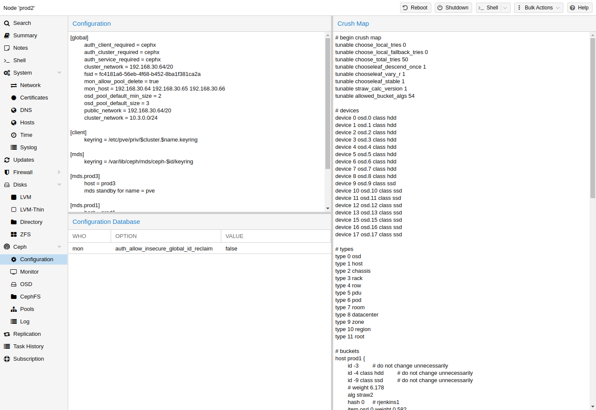

The [30] (Controlled Replication Under Scalable Hashing) algorithm is at the foundation of Ceph.
CRUSH calculates where to store and retrieve data from. This has the advantage that no central indexing service is needed. CRUSH works using a map of OSDs, buckets (device locations) and rulesets (data replication) for pools.
Further information can be found in the Ceph documentation, under the section CRUSH map [31].
This map can be altered to reflect different replication hierarchies. The object replicas can be separated (e.g., failure domains), while maintaining the desired distribution.
A common configuration is to use different classes of disks for different Ceph pools. For this reason, Ceph introduced device classes with luminous, to accommodate the need for easy ruleset generation.
The device classes can be seen in the ceph osd tree output. These classes represent their own root bucket, which can be seen with the below command.
ceph osd crush tree --show-shadow
Example output form the above command:
ID CLASS WEIGHT TYPE NAME -16 nvme 2.18307 root default~nvme -13 nvme 0.72769 host sumi1~nvme 12 nvme 0.72769 osd.12 -14 nvme 0.72769 host sumi2~nvme 13 nvme 0.72769 osd.13 -15 nvme 0.72769 host sumi3~nvme 14 nvme 0.72769 osd.14 -1 7.70544 root default -3 2.56848 host sumi1 12 nvme 0.72769 osd.12 -5 2.56848 host sumi2 13 nvme 0.72769 osd.13 -7 2.56848 host sumi3 14 nvme 0.72769 osd.14
To instruct a pool to only distribute objects on a specific device class, you first need to create a ruleset for the device class:
ceph osd crush rule create-replicated <rule-name> <root> <failure-domain> <class>
<rule-name> | name of the rule, to connect with a pool (seen in GUI & CLI) |
<root> | which crush root it should belong to (default Ceph root "default") |
<failure-domain> | at which failure-domain the objects should be distributed (usually host) |
<class> | what type of OSD backing store to use (e.g., nvme, ssd, hdd) |
Once the rule is in the CRUSH map, you can tell a pool to use the ruleset.
ceph osd pool set <pool-name> crush_rule <rule-name>
If the pool already contains objects, these must be moved accordingly. Depending on your setup, this may introduce a big performance impact on your cluster. As an alternative, you can create a new pool and move disks separately.